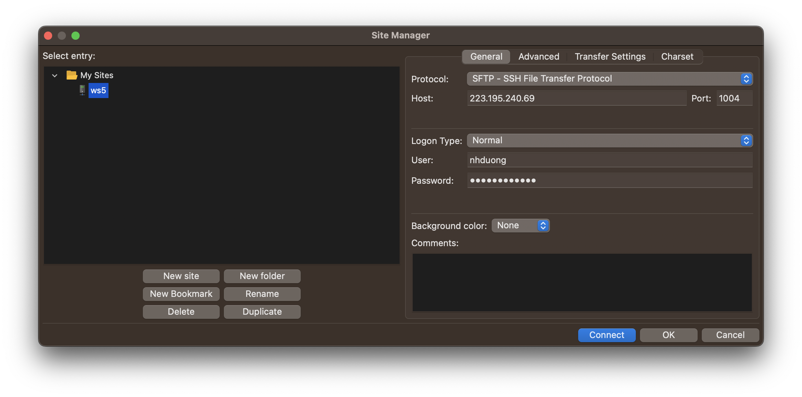
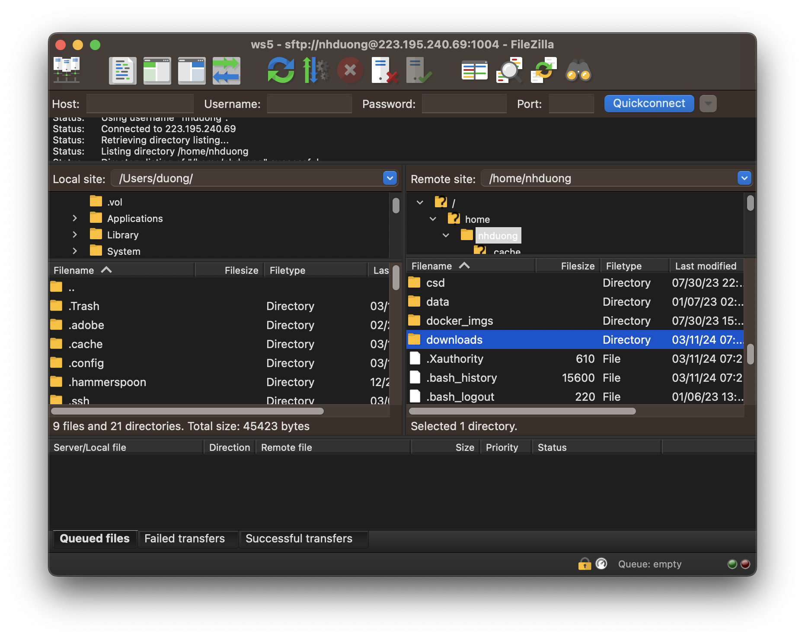

based on Mai's tutorial
last update 2024-03-11
Secure File Transfer Protocol (SFTP) is required for transferring data between your PCs, workstations and NAS. There are several SFTP clients available for you to choose from, such as FileZilla, Bitvise, etc. For command line based software, sshfs, rclone, etc. are also available. In this tutorial, we will use FileZilla and sshfs as examples.
FileZilla is a free software and available for Windows, macOS, and Linux. It is easy to use and provides a user-friendly interface for transferring files between your PCs, workstations and NAS.
Here are the steps to make a connection to workstations/NAS via FileZilla:

For the first time you connect to a workstation/NAS, you will be asked to verify the server's fingerprint. Click on the OK button to continue.
In the figure below, the left panel is for your local machine and the right panel is for the remote server (workstation/NAS). You can drag and drop files between these two panels to transfer data. To visually inspect the data, you can right-click on a file and select View/Edit to open it.Note that the above steps are for the first time you connect to a workstation/NAS. After that, you can simply select a server and click on the Connect button to connect to the server.

sshfs is a command line based software that allows you to mount a remote file system via SFTP. In other words, you can access a folder on the workstation/NAS via a local folder on your PCs.
To mount a workstation/NAS folder on your local machine, follow these steps:
sshfs your_username@remote_IP_address/your_username/remote_folder -p 1004 local_folder
In addition to your PCs, the above command can also be run on a workstation! This way, your workstation can access a NAS folder or another workstation's folder.
You will need to execute the above command every time you restart your PCs or workstations.
Known issues:
fuse: bad mount point … Transport endpoint is not connectedwhen executingsshfs
When you encounter this error, you should unmount the folder viafusermount -u local_folderand then mount it again.- Cannot open files in NAS folder via File Explorer
The files should be opened with "Open With" feature of the File Explorer.